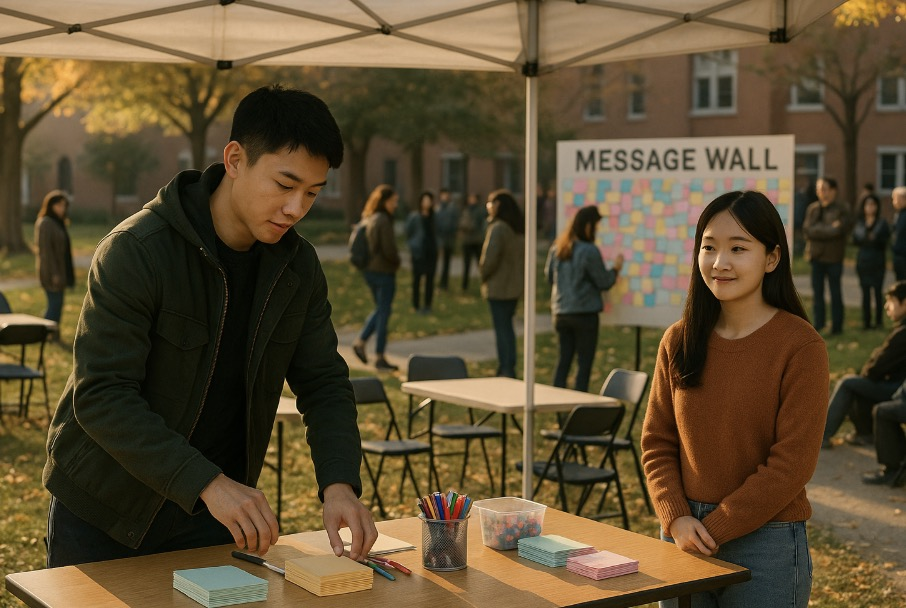

Jack continues to show small consistent changes: helping organize events, listening more, and refraining
from manipulating narratives. Some students slowly regain trust, but others remain skeptical. The system
maintains stability but remains under cautious observation.